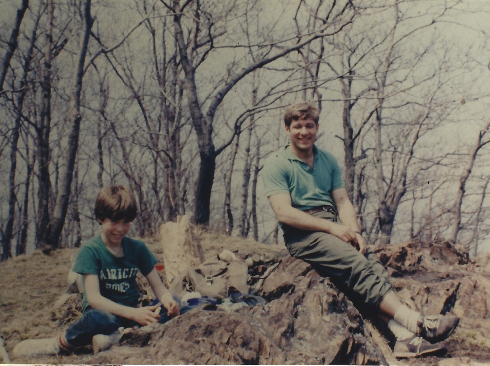

Our Story
I'm a Navy veteran. I served during Desert Shield. My wife has worked in hospice care for over a decade. Between the two of us, we've spent a lot of time around families trying to hold onto someone's story before it's gone.
She sees it at work all the time. Families sitting with someone they love while there's still time, and not knowing how to ask the right questions, or where to put the answers once they get them.
I work in tech. I kept thinking there had to be a better way to do this. Technology that's simple and seamless, so families can do it together instead of alone. Something that builds trust with every step, instead of asking you to hand over a story and hope it's handled right. Something that helps you find the small memories you thought you'd lost, and places them next to the bigger history of the time your loved one served in, so the whole picture comes together.
I wanted it to feel good to use. Not heavy the whole way through. Something you'd actually want to sit down and do with your family, not something you dread.
The real reason, though, is simpler than any of that.

Chad and Mike
My stepfather was Major Mike Mesarch. Mike was a true giver. We all love him so deeply. He served in the Army, then spent twenty more years at Job Corps helping young people find their footing. He taught me and my sons many things, the same way he taught so many other young people who came through his life. He was a great man, the kind who showed up, again and again, for people who needed it.
I did not want that lost. I wanted a way to give that back to him. And I figured if I needed a place like this for my own family, other families probably needed one too.
That's Valor & Serenity.
My wife's work in hospice care informed this project; Valor & Serenity is not affiliated with or endorsed by her employer.
Questions
A Few Things Families Ask
Why does this exist? Isn't there already an official VA memorial?
Yes, and we think it's important. The VA's own Veterans Legacy Memorial is a real, valuable record. If your veteran has a page there, we'll gladly link to it from theirs here. But a record and a story aren't the same thing. Official systems are built to register facts. Service dates, resting place, rank. They aren't built to help you remember the sound of his laugh, or the story he told a hundred times at Thanksgiving, or what it meant that he came home from twenty years in the Army Reserve and spent twenty more helping young people find their way. That's the part we built. Not instead of the official record. Alongside it.
What happens to our information? Do you keep it, or use it for anything else?
Nothing you share here is used to train AI, ours or anyone else's. We don't sell your information, ever. If you use Story Assist, what you type is used only to help shape your own story, then discarded. You can export or delete everything, anytime. It's yours, not ours. Every public tribute is reviewed before it goes live, and you decide exactly who can see it. Just your family, a wider circle, or the whole Valor and Serenity community.
Is this really free?
Building a complete tribute is free, always. No card, no time limit. That includes every theme, the scripture and readings search, the service song player, and your own photos and recordings. If you'd like extra help writing it with Story Assist, or want a permanent home for it as it grows over the years with the Legacy Vault, those are small, optional additions. Cost should never be the reason a veteran's story goes untold. If it ever is, reach out and we'll work it out.